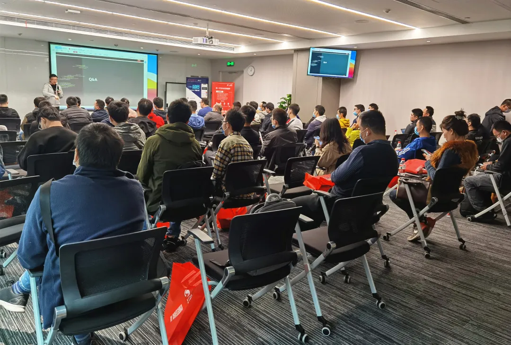
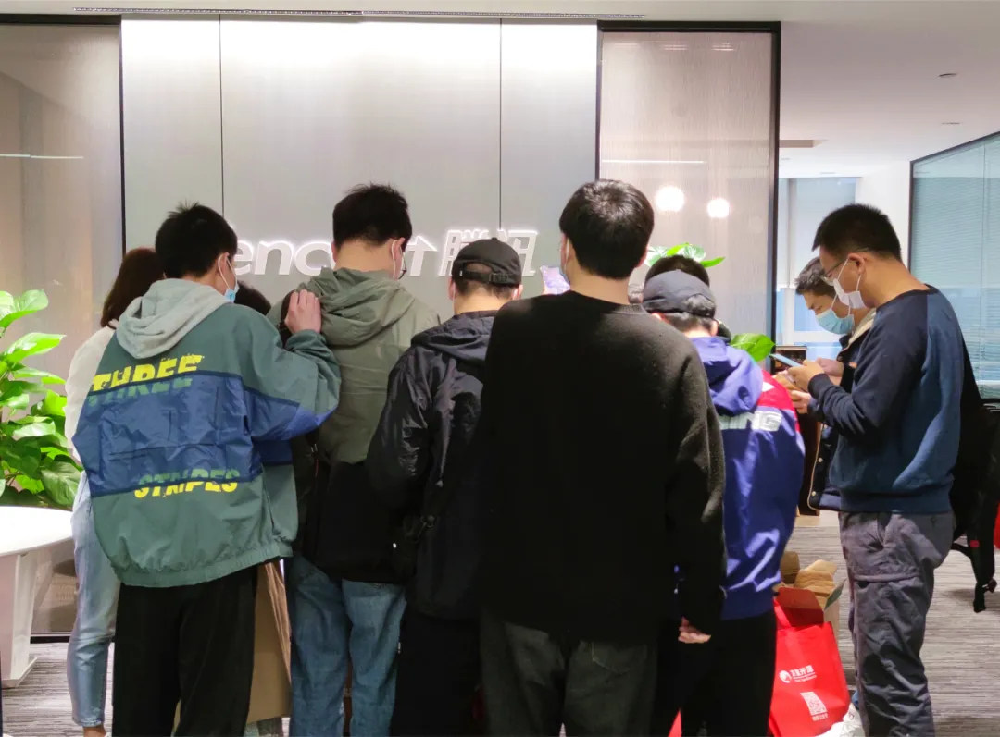

活动 | 技术共享 社区共赢——解锁MGR Bug的16种修复神操作
技术共享，社区共赢。
3月20日，相约成都。
3306π社区2021年首场技术分享会如期而至。万里数据库CTO娄帅受邀发表《MGR Bug修复之路》专题技术演讲，与各位行业专家同台论道，畅谈技术实践经验，在3306π搭建的平台上开展思维碰撞和经验分享，共启一场技术人的干货盛宴。

▲3306π技术分享会成都站现场
MGR Bug修复之路
一场万里数据库技术人的源码贡献之路
3306π作为围绕MySQL及云数据库、大数据等相关技术的专业技术社区，本次活动主要聚焦MySQL的客户端工具、数据库运维平台、数据同步、bug修复及相关数据库的开源和联合应用工作，分享相关技术演进路线及实践经验。
在《MGR Bug修复之路》主题演讲中，娄总表示，由于MySQL的bug修复进程较为缓慢，尤其MGR Bug相比一般bug更为复杂，导致用户准确描述和复现bug的难度加大，使一些bug石沉大海，在较长时间内得不到修复。
针对这种情况，万里数据库的MGR专职研发团队深入研究MGR架构，并在不断的bug修复实践中总结出了一套完善、流畅的bug修复流程，将MGR的缺陷分为bug和性能两类，整理出共16种bug及性能缺陷问题，并进行不懈的bug分析、修复和技术攻关，为MySQL社区贡献修复源码，推动数据库技术向前发展。
娄帅
speech
▲万里数据库MGR专职研发团队整理的Bug分类
与此同时，娄总现场公布了1个重要的好消息：4月1日，万里数据库将发布MGR修复后的单机版二进制包。届时，所有对此软件包感兴趣的技术朋友均可加入社群领取试用版软件。
扫码进群，领取试用版软件
现场参与火爆 GreatDB频受关注
技术分享会签到现场，万里数据库得益于MySQL原中国研发中心背景，拥有15年+深厚的技术积淀，打造了极致、稳定、易用的分布式数据库产品。
更是凭借这些优势先后中标中移动OLTP数据库联合创新项目60%分布式数据库份额、联通沃音乐大数据服务项目、国网信息通信产业集团框架采购项目等运营商、能源领域大型项目，市场黑马秉性展露无遗，引来众多参会嘉宾的围观与驻足，参观热情高涨，万里数据库品牌也因此受到与会嘉宾的高度关注与讨论。

▲GreatDB签到现场
技术是数据库公司的立命之本，精研技术、分享技术、交流技术是所有技术人的信念和坚持。让技术之路走得更远，生态方能发展得更为健全，这也是万里数据库始终秉持的责任和初心所在。
未来，万里数据库仍将耕耘不辍，为3306π为代表的更多社区组织带来力所能及的贡献和技术成果，助力打造一个个开放、共享、进步、合作的社区平台。
技术交流群
扫码进群，领取试用版软件&演讲ppt
推荐阅读1.3分钟了解万里数据库的2020
2. 专访 | 3306π社区专访CTO娄帅，畅谈万里数据库的MGR Bug修复之路
3. 福利 | 3306π技术分享会成都站火爆开启，万里免费送票啦！


扫码二维码
关注公众号